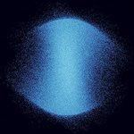
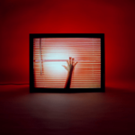

Music Reviews
-

Hovvdy True Love
The Austin duo of Charlie Martin and Will Taylor show best on True Love when they let things shine.
Mark Moody reviews... -

illuminati hotties Let Me Do One More
Sarah Tudzin keeps her self-proclaimed promise of delivering “all riprs and no more skiprs” on her second LP, the cheekily titled Let Me Do One More—brimming with a joyful energy that feels equally confident and empowered.
Juan Edgardo Rodríguez reviews... -

The Vaccines Back in Love City
On their fifth album, the London quintet expand their scope with a hearty tribute to country and American music.
Fran González reviews... -

Andrew W.K. God is Partying
Following 2018's You're Not Alone, which had Andrew W.K. acting as a motivational self-help coach, the relatively more grim God is Partying is his sharpest pivot yet. It still rocks though.
Juan Edgardo Rodríguez parties hard... -

Little Simz Sometimes I Might Be Introvert
Sometimes I Might Be Introvert is an open window into the deep and private thoughts the London-based wants to share with us, aware that there's strength in being vulnerable.
Fran González reviews... -

Deafheaven Infinite Granite
Infinite Granite, the group’s fifth full-length studio LP, sees George Clarke, Kerry McCoy, and company turning in their screamed vocals, blistering tempos, and eardrum-obliterating tremolos for a more contemplative approach to blackgaze.
Jackson Glassey reviews... -

CHVRCHES Screen Violence
The trio's fourth album presents a sincere tribute to '80s horror cinema, weaving together personal stories and rage-infused critiques with a seductive aesthetic.
Fran González reviews... -
Halsey If I Can't Have Love, I Want Power
The singer-songwriter's provocative fourth album is imbued with a palpable sense of drama in how its menacing arrangements move effortlessly around their needs, desires, and insecurities.
Juan Edgardo Rodríguez reviews... -
.jpg)
The Killers Pressure Machine
Brandon Flowers' sentences seem to trail off just as the story gets good on this well-intentioned but clunky concept album.
Matthew Smith reviews... -
Jungle Loving In Stereo
The electronic duo's joyful third album has no misleading messages or presumptuous metaphors. It's exactly what it sounds like: an open letter to celebrate life and love, which is not a small thing.
Fran González reviews...